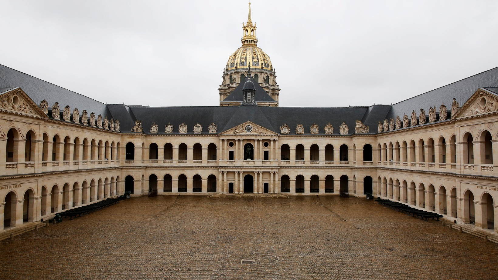
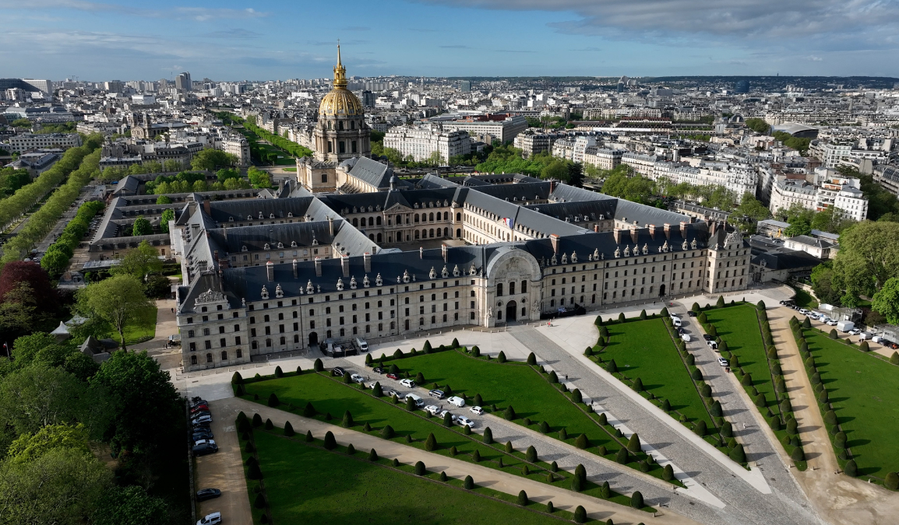
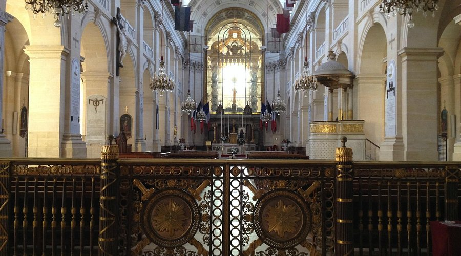
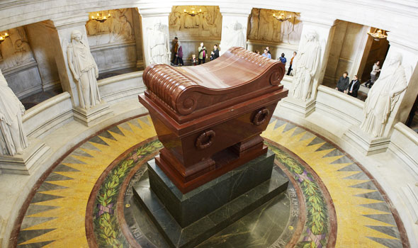
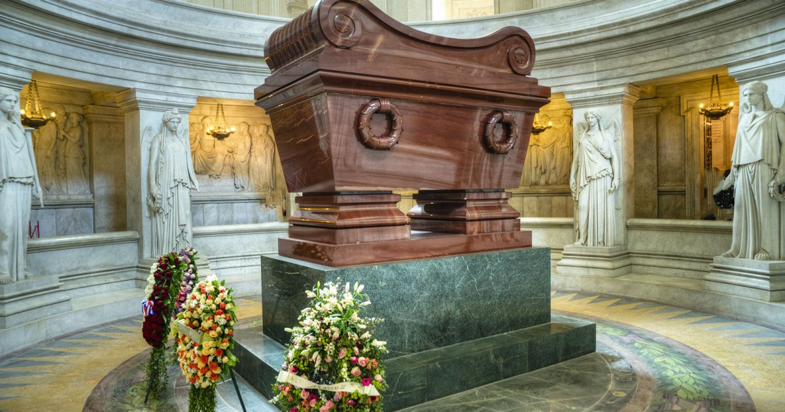
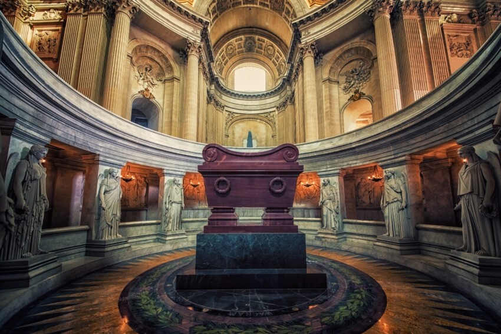
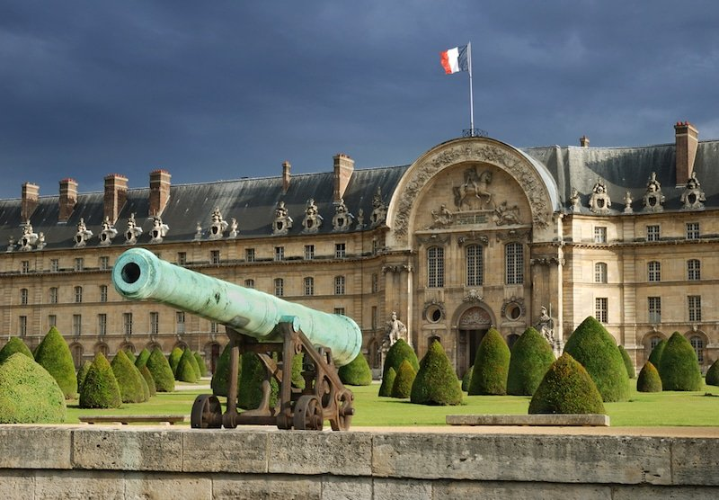
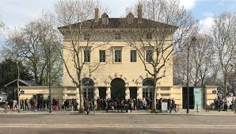
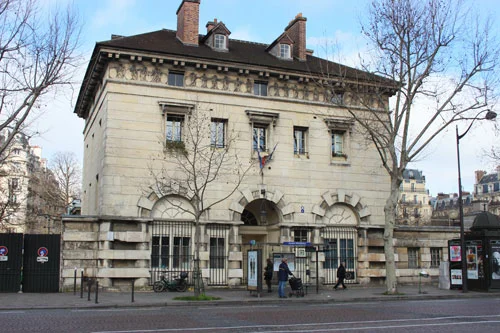
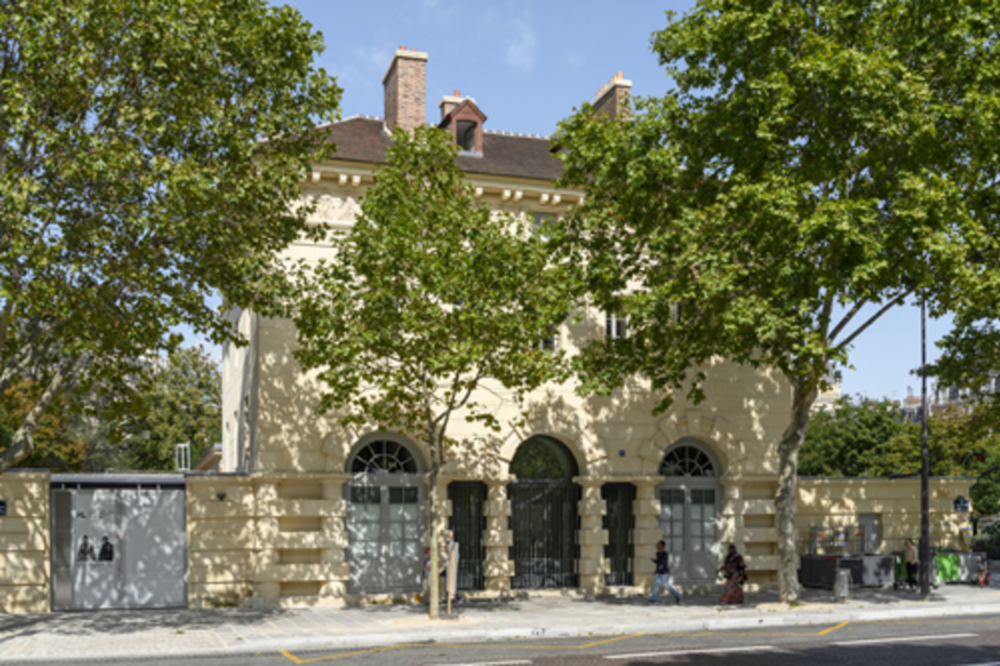

Dettagli dei Monumenti
Scopri la ricchezza storica e artistica dei nostri luoghi
Les Invalides
Hôtel des Invalides


Storia e Significato
Les Invalides rappresenta uno dei complessi architettonici più significativi di Parigi. Costruito per volere di Luigi XIV nel 1670, questo maestoso edificio nasceva dall'esigenza di fornire assistenza ai veterani di guerra francesi. L'architettura imponente, caratterizzata dalla celebre cupola dorata, incarna la grandezza del Re Sole e la potenza militare francese.
Il complesso si estende su un'area di 13 ettari e comprende non solo l'ospedale originario, ma anche il Musée de l'Armée, la tomba di Napoleone e la chiesa di Saint-Louis-des-Invalides. Ogni elemento architettonico racconta una storia di potere, arte e memoria collettiva.
Curiosità Storiche
La Cupola Dorata
Contiene oltre 12 kg di foglia d'oro puro, applicata in 550.000 fogli sottilissimi
Capacità Originaria
Poteva ospitare fino a 4.000 veterani di guerra contemporaneamente
Tempo di Costruzione
Completato in soli 6 anni, un record per l'epoca
Tomba di Napoleone
Dôme des Invalides



Il Mausoleo dell'Imperatore
La tomba di Napoleone Bonaparte rappresenta uno dei capolavori dell'architettura funeraria mondiale. Progettata da Louis Visconti, questa monumentale opera d'arte custodisce le spoglie dell'Imperatore in un sarcofago di quarzo rosso di 35 tonnellate, posizionato al centro di una cripta circolare di straordinaria bellezza.
Il progetto architettonico riflette la grandezza e l'ambizione di Napoleone, con una struttura che evoca sia la maestà imperiale che l'innovazione tecnica. La cripta, accessibile attraverso una scala monumentale, crea un'atmosfera di sacralità e rispetto che onora la memoria di uno dei personaggi più influenti della storia europea.
Dettagli Tecnici
Peso del Sarcofago
35 tonnellate di quarzo rosso della Corsica
Dimensioni
4 metri di lunghezza, 2 metri di larghezza
Trasporto
Trasportato dalla Corsica via mare nel 1861
Musée de l'Armée
Museo Nazionale dell'Esercito

Una Collezione Straordinaria
Il Musée de l'Armée ospita una delle collezioni militari più ricche e complete al mondo, con oltre 500.000 oggetti che raccontano l'evoluzione dell'arte della guerra dal Medioevo ai giorni nostri. La collezione comprende armature medievali, armi da fuoco storiche, uniformi, bandiere, documenti e opere d'arte militare di inestimabile valore.
Il museo è organizzato in sezioni tematiche che permettono ai visitatori di esplorare diversi periodi storici e aspetti della vita militare. Dalle armature dei cavalieri medievali alle uniformi della Grande Guerra, ogni oggetto racconta una storia di coraggio, innovazione e sacrificio.
Pezzi Unici
Armatura di Francesco I
Armatura completa del re di Francia del XVI secolo
Cavallo di Napoleone
Vizir, il cavallo preferito dell'Imperatore
Bandiere Storiche
Oltre 1.000 bandiere e stendardi storici
Musée de la Libération
Leclerc & Moulin



Storie di Coraggio e Libertà
Il Musée de la Libération è dedicato alla memoria del generale Philippe Leclerc de Hauteclocque e di Jean Moulin, due figure emblematiche della Resistenza francese. Il museo racconta le loro storie straordinarie attraverso documenti originali, fotografie, oggetti personali e testimonianze che permettono di rivivere uno dei periodi più drammatici e gloriosi della storia francese.
L'esposizione permanente esplora non solo le gesta militari e politiche di questi due eroi, ma anche il contesto sociale e culturale dell'epoca, offrendo una visione completa della Francia durante l'occupazione nazista e la lotta per la liberazione.
Percorso Emotivo
Jean Moulin Artista
Dipingeva sotto lo pseudonimo Romanin
Jeep di Leclerc
Il veicolo originale usato nella liberazione
Documenti Originali
Lettere e telegrammi autentici
Il Nostro Itinerario
Programma dettagliato del quarto giorno
Partenza — B&B HOTEL
4 Rue Emile Reynaud, 75019 Paris
Metro verso Les Invalides
Linea 8, 13 - Stazione Invalides
Spostamento
Verso il Musée de la Libération
Ritorno all'hotel
Trasferimento in metro
Informazioni Pratiche
Musée de l'Armée & Les Invalides
Include Tomba di Napoleone129 Rue de Grenelle, 75007
Linea 8, 13 (Invalides)
€17 • €12 ridotto • Gratis <18
Tutti i giorni 10:00 - 18:00
Musée de la Libération
Ingresso GratuitoPlace Denfert-Rochereau, 75014
Linea 4, 6 (Denfert-Rochereau)
Gratuito per tutti
Mar - Dom 10:00 - 18:00
Consigli Pratici
Mappa & Risorse
Scansiona per info complete
Il Nostro Gruppo
Il team di viaggio culturale